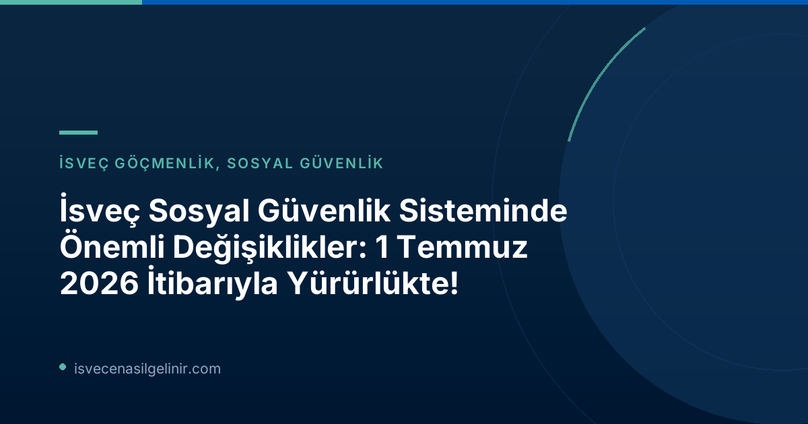

İsveç Sosyal Güvenlik Yasalarındaki Güncel Değişiklikler Nelerdir?
İsveç Riksdagen tarafından onaylanan ve 1 Temmuz 2026 tarihinden itibaren yürürlüğe giren bu üç önemli değişiklik, sosyal güvenlik sisteminin daha adil ve etkin işlemesini sağlamayı amaçlamaktadır.1. Yanlış Ödemelere Karşı Yaptırım Ücreti (Sanktionsavgift) Geliyor
Försäkringskassan ve Pensionsmyndigheten, artık yanlış bilgi veren veya koşullardaki değişiklikleri bildirmeyerek hatalı ödemelere neden olan kişilere karşı yaptırım ücreti uygulama yetkisine sahip olacak. Bu uygulama, yanlış ödemelerin sayısını azaltmayı ve İsveç refah sistemlerine olan güveni pekiştirmeyi hedefliyor.Yaptırım Ücreti Detayları
- Yürürlük Tarihi: 1 Temmuz 2026
- Uygulayıcı Kurumlar: Försäkringskassan ve Pensionsmyndigheten
- Yaptırım Yüzdesi: Hatalı ödenen ve geri ödenmesi gereken tutarın %25'i
- Minimum Yaptırım Ücreti: En az 2.368 SEK (Fiyat taban miktarının %4'ü)
- Amacı: Hatalı ödemeleri azaltmak ve refah sistemlerine güveni artırmak.
2. Destek Kilitlenmesi (Bidragsspärr) ile Maksimum 3 Yıla Kadar Men
Sosyal sigorta sisteminin kötüye kullanımına karşı daha güçlü bir koruma sağlamak amacıyla yeni bir yaptırım olan "destek kilitlenmesi" yürürlüğe giriyor. Bilerek veya ağır ihmal sonucu hatalı ödemelere neden olan kişiler, duruma ve ihlalin ciddiyetine göre belirli ödeneklerden birkaç aydan üç yıla kadar men edilebileceklerdir.| Yaptırım Adı | Tanım | Süre | Amacı |
|---|---|---|---|
| Bidragsspärr (Destek Kilitlenmesi) | Bilerek veya ağır ihmal sonucu hatalı ödemelere neden olan kişilere uygulanır. | Birkaç aydan maksimum 3 yıla kadar. | Sosyal sigorta sisteminin sistematik kötüye kullanımına karşı korunma sağlamak. |
3. Ebeveyn Parası Başvurusunda Büyük Kolaylık: Ön Bildirim Şartı Kalktı
Ebeveyn parası (föräldrapenning) başvurularında önemli bir basitleştirme yapıldı. 1 Temmuz 2026 tarihinden itibaren, ebeveyn izni kullanmak isteyen kişilerin artık Försäkringskassan'a önceden bildirimde bulunma zorunluluğu kaldırıldı. Bu değişiklik sayesinde, ebeveynler doğrudan ebeveyn parası başvurusunda bulunabilecekler. Bu ve benzeri İsveç'teki yaşamınıza dair önemli bilgilere sverigemedborgarskapsprov.com adresinden ulaşabilirsiniz.Bu Değişiklikler Sizleri Nasıl Etkileyecek?
Bu yasa değişiklikleri, İsveç sosyal güvenlik sisteminin daha şeffaf ve adil işlemesini sağlamayı hedeflemektedir. Özellikle yaptırım ücretleri ve destek kilitlenmesi, hatalı bilgi veren veya sistemi kasıtlı olarak kötüye kullanan kişileri caydırmayı amaçlamaktadır. Ebeveynler için ise ebeveyn parası başvuru sürecinin basitleştirilmesi, bürokratik yükü azaltarak daha hızlı ve kolay bir başvuru imkanı sunmaktadır. Tüm vatandaşların, Försäkringskassan ile olan etkileşimlerinde doğru ve güncel bilgi verme yükümlülüğüne dikkat etmeleri büyük önem taşımaktadır.Referanslar ve Daha Fazla Bilgi
İsveç'teki Haklarınızı ve Yükümlülüklerinizi Öğrenin!
İsveç sosyal güvenlik sistemi karmaşık olabilir. Haklarınızı ve yükümlülüklerinizi tam olarak anlamak, beklenmedik durumlarla karşılaşmamanız için hayati öneme sahiptir. Uzmanlarımız size yol göstermeye hazır.